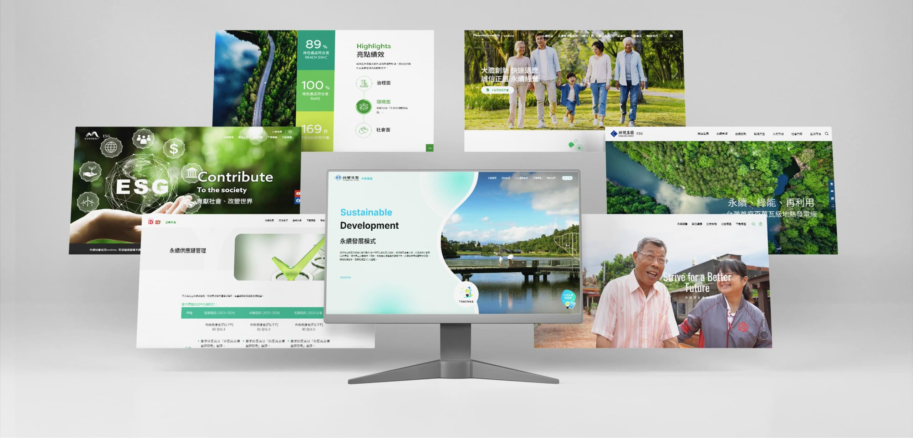
合作成功案件數：
6件
應用裝置：
Web / Pad / Mobile
製作時間：
1 months
我的角色：
架構流程與UI設計
專案介紹
專案介紹
隨著全球對可持續發展的重視程度不斷提高，企業建立有效的ESG網站已成為一項必要舉措。公司內部為了提升開發效率，期望採用模組化設計的方式，因這類型網站的評分架構一致，無需逐一客製化製作。在接案時，我們只需針對風格進行重新設計，而後台功能和前台架構則保持不變，這一計畫的實施將顯著加速開發時程，使公司能夠承接更多專案，從而提高整體業務運營效率。透過這種方式，我們不僅能夠提供高品質的ESG網站解決方案，還能在市場上保持競爭優勢。
01.我的貢獻
考取ESG評審證照熟悉審核流程及評分重點，規劃完善網站架構，並與程式共同討論後台模組功能的維護方式，再依照客戶需求設計前台風格，將ESG的專案以系統化的方式開發，提升工作效率及確保專案的整體質量與一致性。
02.面臨的挑戰
原本客製化開發網站的時間需兩個月，但在模組開發完成後，時程縮短至一個月，前後台功能均能迅速開發完成。此外，內部程式人員能夠共同維護系統，不僅提升了開發效率，還有效解決了反覆重工的問題。前台報告書單元的主題顏色設計也與網站巧妙融合，增強了整體視覺效果。
訂定專案目標
整合網站架構，透過模組化設計，打造高效ESG網站，節省開發時間，解決反覆重工製作的問題。
-
節省開發時間
-
解決重工問題
-
方便維護專案
痛點項目
 網站架構相同，但後台卻要重複製作，沒有效率。
網站架構相同，但後台卻要重複製作，沒有效率。
 其他程式的寫法不一致，沒有統一撰寫邏輯，不好維護。
其他程式的寫法不一致，沒有統一撰寫邏輯，不好維護。
 報告書主題都有單元色，希望網站中也可以應用，但很多物件要變色，不能一鍵處理。
報告書主題都有單元色，希望網站中也可以應用，但很多物件要變色，不能一鍵處理。
競品分析 (參考架構流程)
分析了三個競品網站，避免過多的文字影響閱讀的意願，採用更直觀的數據視覺化方式，簡化文字內容，讓關鍵數據一目了然。透過精簡的文案和清晰的數據展示，能夠更好地與利害關係人建立聯繫，提升品牌形象。
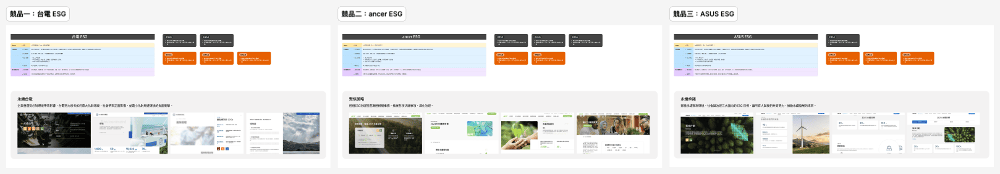
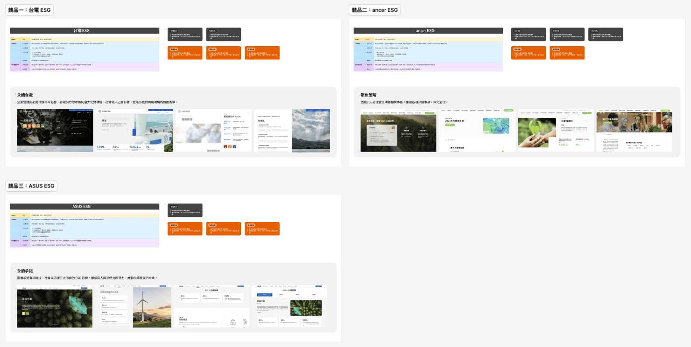
網站架構圖
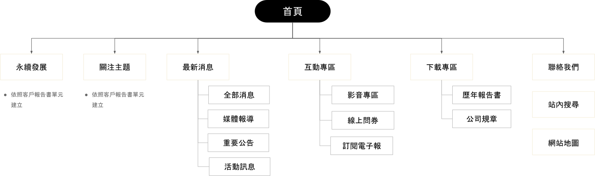
首頁因各企業擺放資訊無法統一，仍需客製化製作，內頁則依統整後的架構開發前台版面。以下針對內頁設計亮點功能介紹：
01
關注主題
畫面以台塑生醫ESG為示意範例
02
次章節呈現
為了協助客戶在報告書主題單元中選擇適合的次章節呈現方式，提供以下兩種選項，客戶可以根據喜好需求和閱讀習慣選擇最適合的一種。
切頁方式
每個次章節獨立分開，讓讀者在翻閱時能夠清楚地看到每一部分的內容。
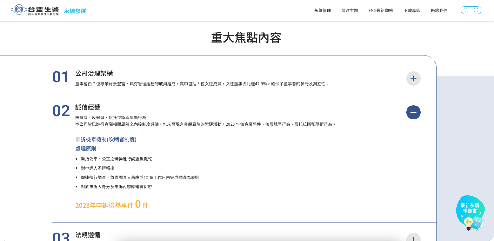
- 清晰度： 每個次章節都能獨立呈現，避免資訊混淆。
- 易於導航： 讀者可以快速找到所需的章節，特別是在較長的報告中。
- 專注性： 切頁設計有助於讀者集中注意力於當前章節。
收合方式
次章節內容隱藏在可展開的標題下，讀者可以根據需求展開查看。
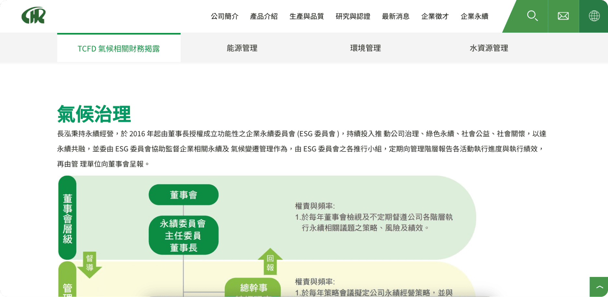
- 節省空間： 適合內容較多的報告，避免頁面過於擁擠。
- 靈活性： 讀者可以根據興趣選擇展開或收合，不必一次性接觸所有資訊。
- 整潔性： 報告看起來更為整齊，有助於提升整體可讀性。
03
問券調查
統整各家企業會有的問券形式，設計兩款常用版面，讓客戶依照需求挑選。
一頁式勾選
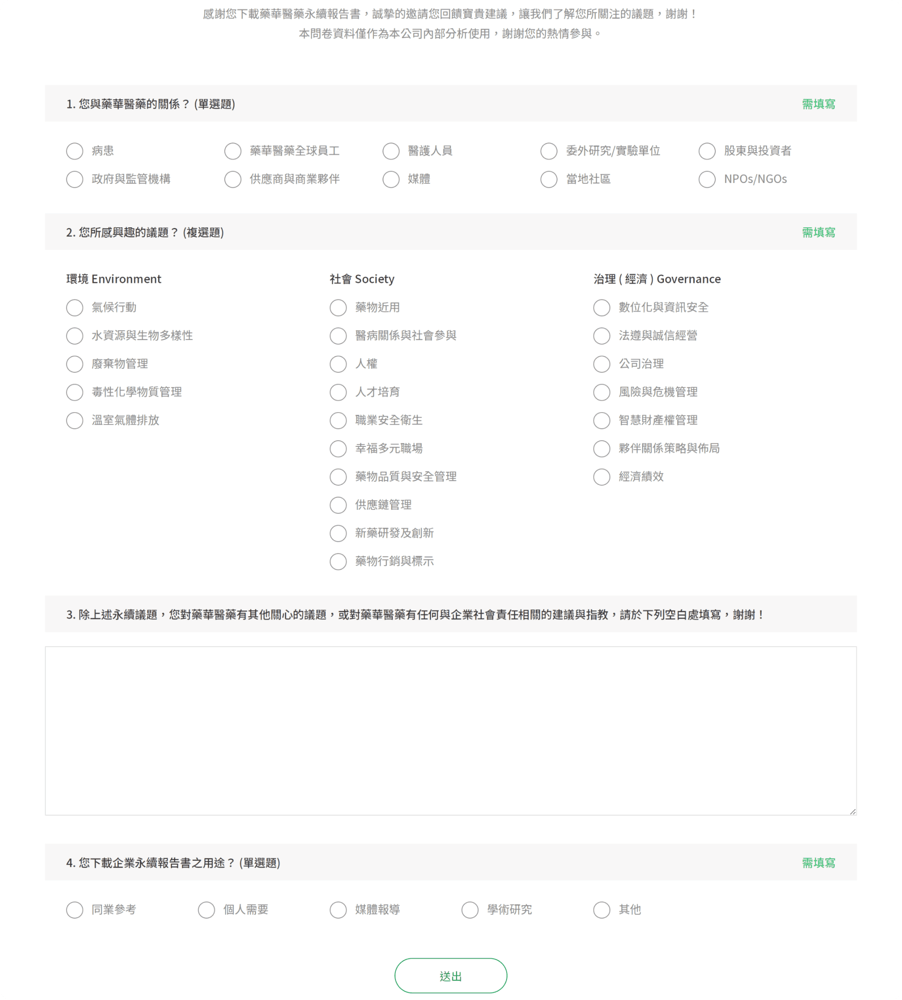
依照ESG面向填寫分數
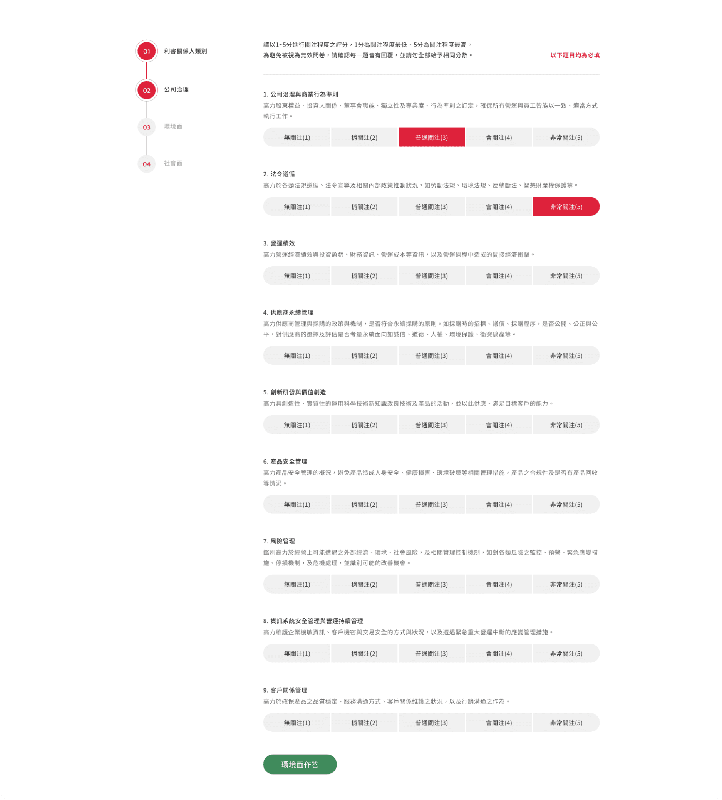
04
下載專區
報告書的風格設計將以活潑多樣的方式呈現，旨在提升趣味性，與傳統的公司規章形成鮮明對比。相較於規章專區的列表式表格，報告書將融合色彩背景、交疊區塊帶出空間層次，最後結合簡潔明瞭的文字，讓內容更具吸引力和可讀性。
報告書專區
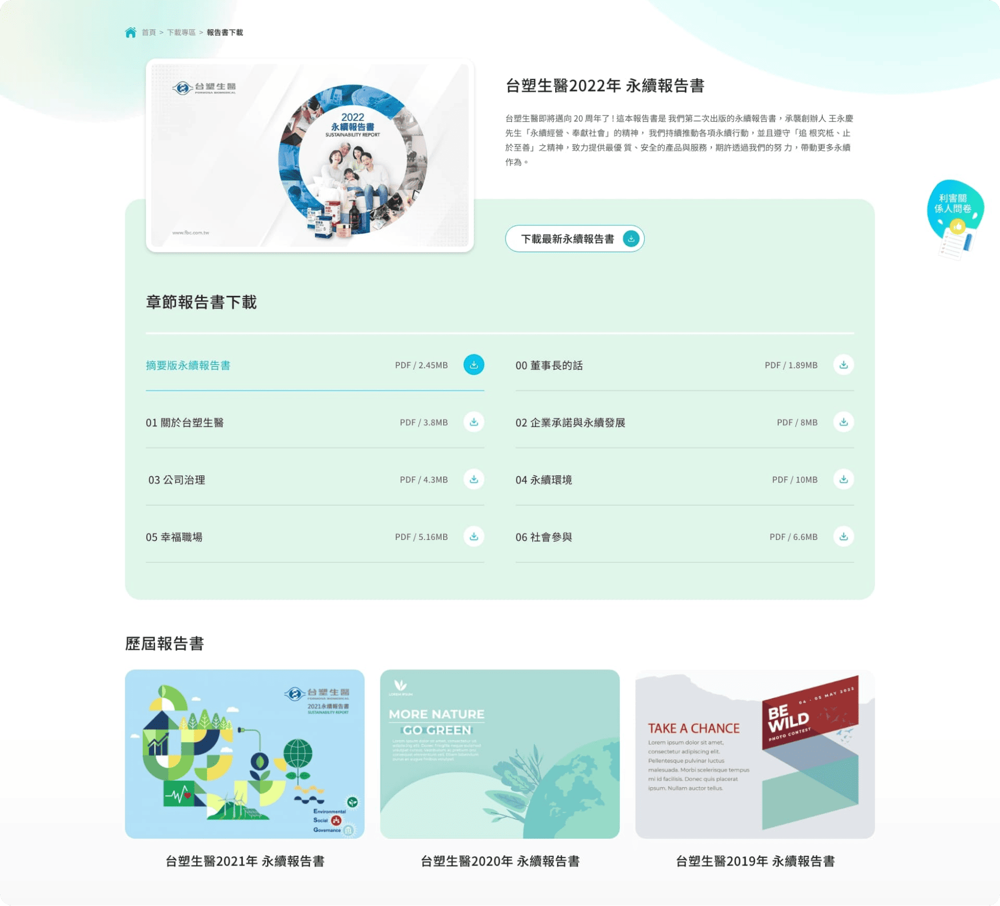
公司規章
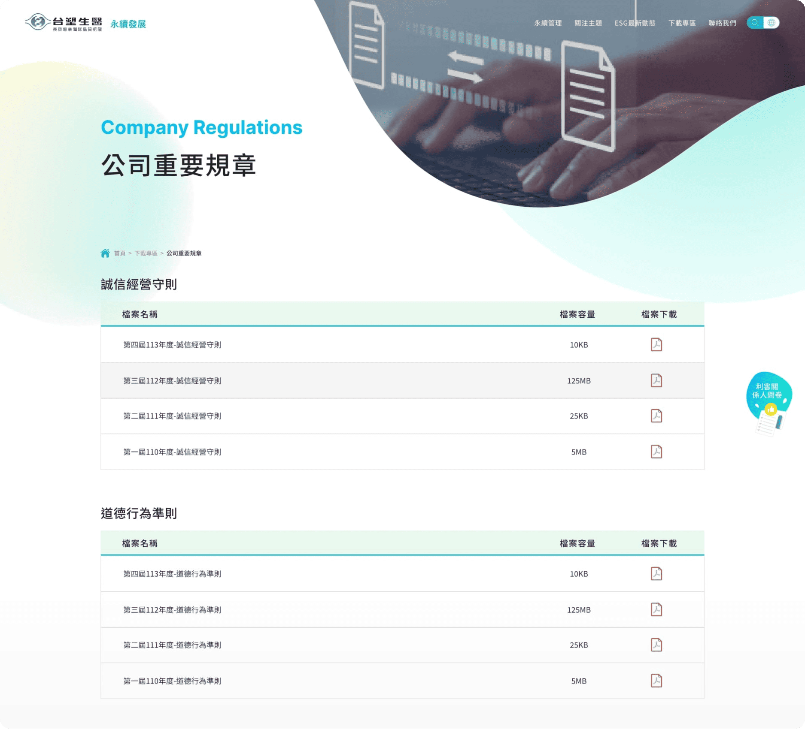
05
訂閱電子報
留下用戶的聯絡資訊，能夠直接將最新資訊和優惠推送到用戶的收件箱，提升觸及率，也能增強品牌與利害關係人之間的信任感。
獨立跳框方式
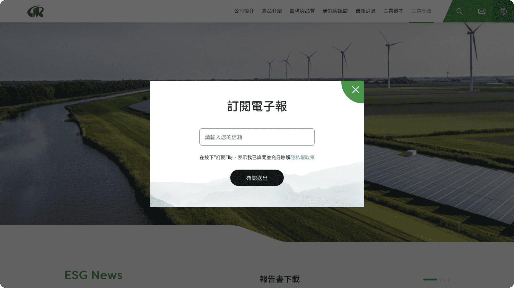
連接至連絡表單
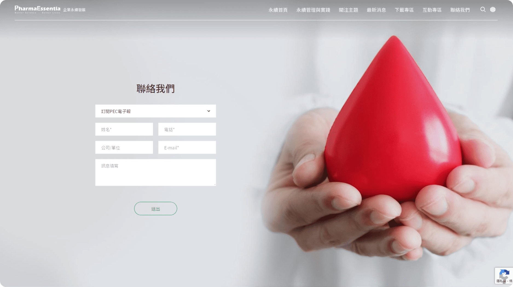
學習與收穫
內部優化專注於提升現有網站的功能與使用者體驗，而不是從零開始建設一個全新的平台，這使我能夠針對具體問題進行深入分析，並有效整合資源，以達到最佳效果。
為了可以深入了解TCSA的評分標準，代表公司參與培訓課程，因此對於永續發展及評分標準的理解有了顯著提升。透過課程，我學會了如何有效評估企業的永續報告，並在第二年擔任志工評審時，獲得與專業評審相同的評分結果，這讓我非常欣喜，並因此獲頒銅級評審員證書。
因專業知識的積累讓我對於網站的規劃更加精準，模組開發後成功縮短一半的開發時程，不僅提升了團隊的工作效率，也能夠更快地將產品推向市場。
最令人振奮的是，我們獲得了客戶的高度評價。客戶對於網站的功能性和美觀性表示滿意，這也為我們贏得了信任。隨著良好的口碑傳播，成功新增了多達6件新案，這不僅是對我們工作的肯定，更是未來發展的一個良好開端。
這次網站製作經歷讓我深刻體會到專業知識的重要性以及團隊合作的力量。未來，我期待能夠將所學應用於更多項目中，持續提升自我，為客戶提供更優質的服務。
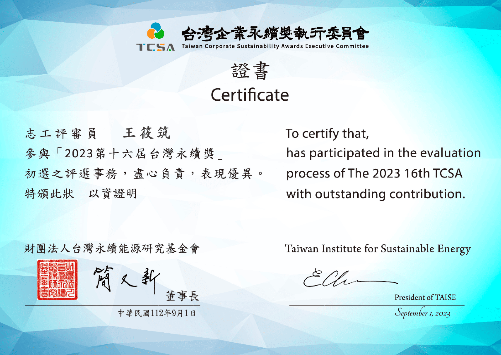
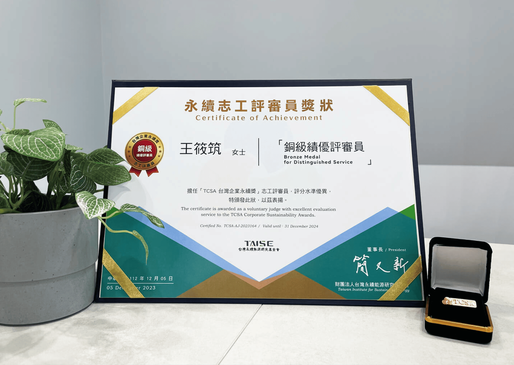
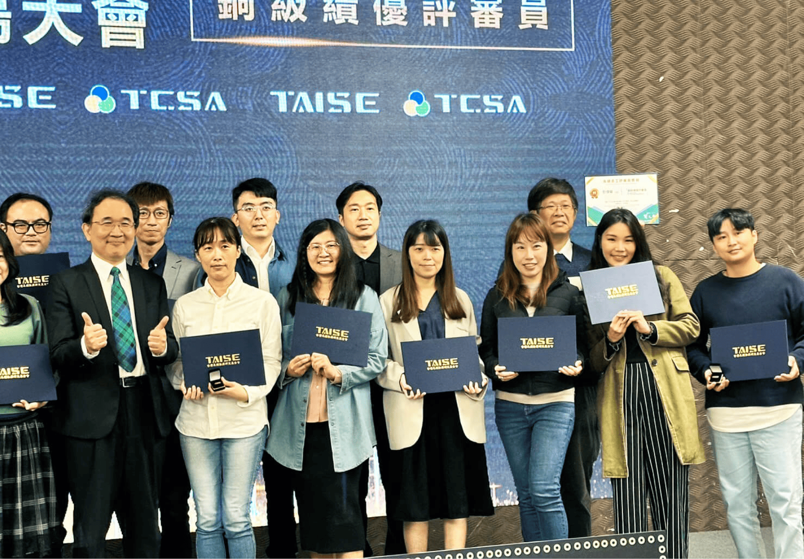
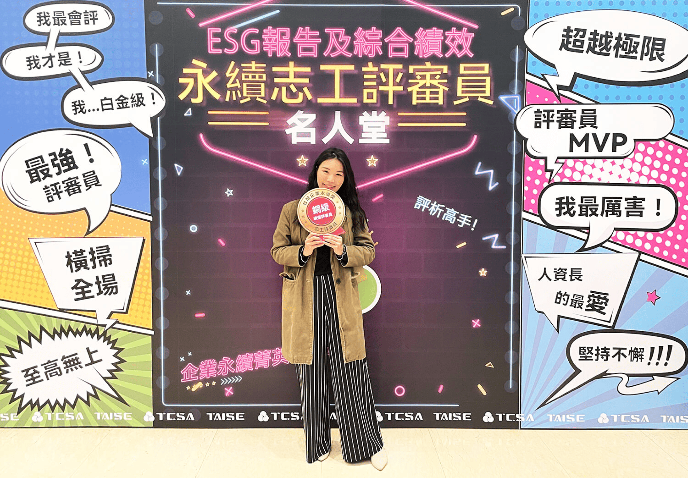